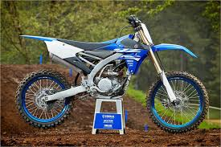

HISTORY
Origins
The genesis of motocross came in the UK in the early 1900s where Auto-Cycle Clubs would host time trials. These trials evolved into regular off-road events called ‘scrambles’. The first ever official scramble was held in Camberley, Surrey in 1924. From these humble beginnings the sport would develop over the coming decades.
Growth
As the sport grew in size and popularity, clubs and competitions emerged throughout Britain. Team events also became a regular feature of these events. One drawback, however, was that the bikes used in competition were almost identical to the ones used on the road.
Innovation
Innovation was essential if the sport was to grow. Many technical challenges had to be faced as courses began to evolve in their complexity and difficulty. One of the major developments was the introduction of the swinging arm suspension which created bikes better adapted to the challenges of motocross racing.
Post World War 2 motorcycle manufacturing, vital to the war effort, became a vibrant industry as civilian demand exploded both in Europe and further afield. Bikes went from 50cc to 250cc engines in the 1950s and 60s, resulting in bikes that had greater agility and that were lighter and faster than their predecessors, all elements which were essential for motocross racing.Today
Motocross is thriving with exciting sponsorship deals bringing big prize money to races and new off-shoots of the original racing concepts. Freestyle, Supercross, Big Air and Supermoto are hugely popular formats where drivers show off their skills by performing jumps and stunts.
TOP RIDERS
Ricky Charmichael
James stewart
Ken Roczen
Personal Experience
I got my first dirtbike when I turned 3 years of age. My father bought me a PW50 when we lived in Ohio. I learnt how to ride dirtbikes before learning how to ride a bycicle.
When I turned 5, I went to my first race and kept riding up until last year.
Dirtbikes
Yamaha

KTM
Kawasaki
Suzuki
Honda